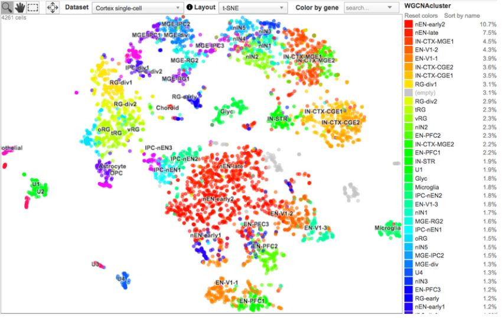
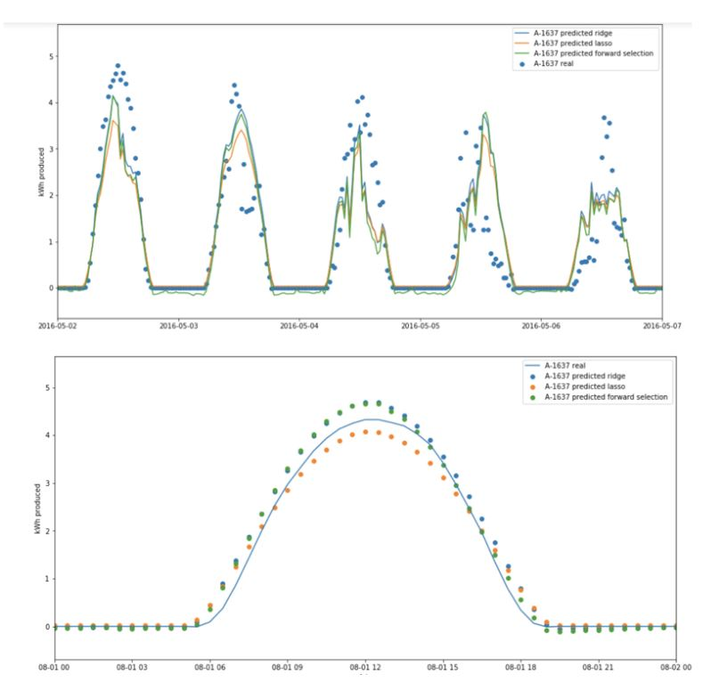
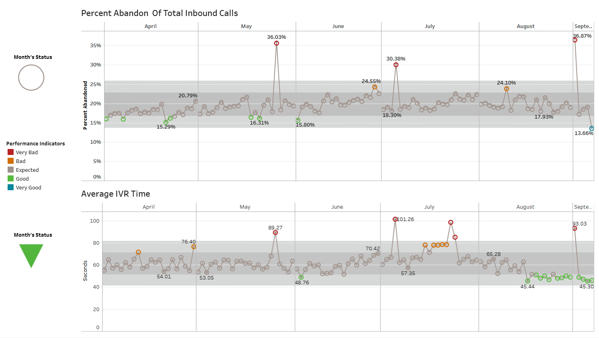
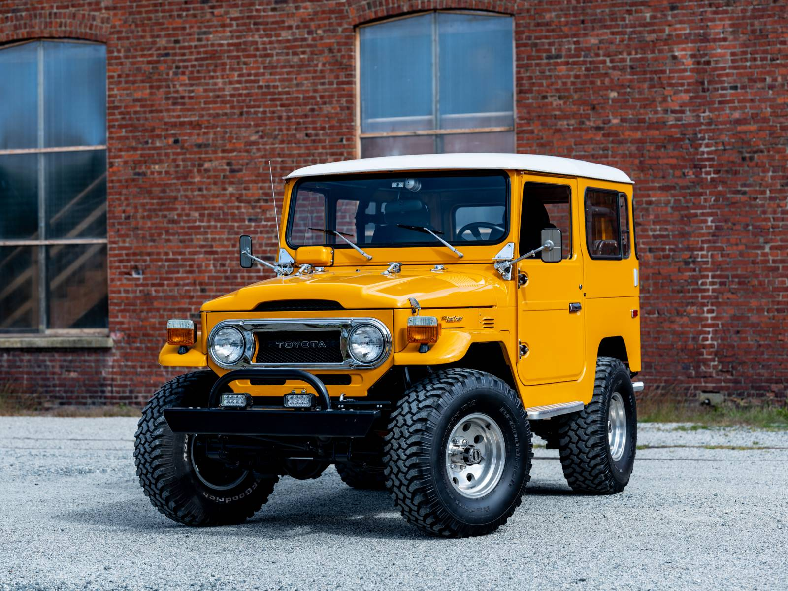

September'16-June'21
Taking the time to walk to La Jolla beach, or going out camping in the desert to enjoy the peace of mind were important rituals for me and likely what helped me stay motivated and inspired. I am grateful for the opportunity to teach programming courses and volunteer for research with the Computational Neural Data and Dynamics lab and their Brainome initiative. However, I'm even more excited for what's to come.

Using the NUS-II dataset, I custom built my own convolutional neural network (CNN) for static hand posture classification of a diverse dataset achieving 90.4% accuracy in testing, with tensorflow, keras, OpenCV and sklearn.

We chose to drop Plotly 2.0 server-wide in favor of implementing the UCSC cell browser for its efficiency with large genomic and epigenomic datasets when performing t-SNE and UMAP dimensionality reduction. Used Pandas, Scrapy and SSH tunneling.

Chose to address renewable energy storage with a team of data scientists on campus. Designed a Lasso and Ridge Regression using k-fold CV (k=5) to select the optimal features to generate predictions by using Forward Selection. Used Matplotlib, sklearn, statsmodels and Pandas.

Defined KPIs from analyzing custom SQL queries and representing them with live dashboards for management via Tableau. I cannot provide code I developed for the bank, but this
Tableau page I saved captures the improvement in perfomance metrics after I fixed bugs in the IVR system.

Privately contracted to develop C++ code for window functions of the Toyota FJ-40 and other functions in order to restore this classic car.

A Generative Adversarial Network that creates beautiful images of paintings by training a generator with the art of famous romantic painters, and a discriminator to tell the forged paintings from the real ones. Developed with tensorflow.
{kind=link}